Bài: Sinh lý Tiêu hóa và Hấp thu tại Ruột non (Small Intestinal Physiology)
Tìm hiểu các hoạt động cơ học, cơ chế bài tiết dịch tiêu hóa phối hợp và chi tiết quá trình tiêu hóa, hấp thu các chất đại phân tử dinh dưỡng, nước và điện giải tại bờ bàn chải ruột non.
Phần I: Đại cương & Hoạt động Cơ học của Ruột non
Ruột non (Small Intestine) là cơ quan quan trọng nhất của ống tiêu hóa, đảm nhận vai trò thiết yếu trong việc tiêu hóa triệt để thức ăn và hấp thu phần lớn các chất dinh dưỡng, nước và điện giải vào cơ thể. Quá trình này đòi hỏi sự phối hợp nhịp nhàng của bốn hoạt động sinh lý cơ bản: cơ học, bài tiết, tiêu hóa và hấp thu.
Nhờ cấu trúc giải phẫu đặc biệt bao gồm các nếp gấp niêm mạc (plicae circulares), hệ thống nhung mao (villi) nhô lên như ngón tay và hàng triệu vi nhung mao (microvilli) ở cực đỉnh tế bào biểu mô tạo thành bờ bàn chải (brush border), diện tích hấp thu hiệu dụng của ruột non được tăng lên gấp 600 lần so với một ống nhẵn có cùng kích thước, đạt tổng diện tích bề mặt khoảng 250 m2.
Các cử động cơ học của ruột non
Hoạt động cơ học của ruột non có chức năng nhào trộn dưỡng trấp (chyme) với các dịch tiêu hóa và đẩy chúng di chuyển dọc theo chiều dài ống tiêu hóa để tối ưu hóa quá trình hấp thu. Có 4 loại vận động cơ học chính tại ruột non:
-
Co bóp phân đoạn (Segmentation)
Đây là cử động đặc trưng nhất của ruột non khi có thức ăn (giai đoạn sau ăn). Các vòng cơ trơn co thắt chia ruột thành từng đoạn ngắn khoảng 1 cm, sau đó giãn ra và các đoạn lân cận co lại. Cử động này di chuyển dưỡng trấp tới lui liên tục, nhào trộn đều dưỡng trấp với dịch tiêu hóa, đồng thời đưa dưỡng trấp tiếp xúc sát bề mặt niêm mạc biểu mô để hấp thu.
Tần số co bóp phân đoạn được thiết lập bởi nhịp điện cơ bản (BER) từ tế bào kẽ Cajal, cao nhất ở tá tràng (khoảng 12 lần/phút) và giảm dần về phía hồi tràng (8 lần/phút). Sự chênh lệch tần số này tạo ra gradient áp lực đẩy nhẹ dưỡng trấp đi dần xuống ruột già.
-
Nhu động (Peristalsis)
Là một làn sóng co bóp cơ học lan truyền, bắt đầu bằng sự co cơ vòng ở phía trên viên thức ăn (phía miệng) và giãn cơ vòng ở phía dưới viên thức ăn (phía hậu môn), dưới sự phối hợp của đám rối thần kinh ruột (Auerbach). Sóng nhu động đẩy dưỡng trấp di chuyển xuôi dòng về phía ruột già.
Ở ruột non, các sóng nhu động thường yếu và di chuyển với tốc độ rất chậm (khoảng 1 cm/phút), giúp dưỡng trấp lưu lại đủ lâu (từ 3 đến 5 giờ) để quá trình tiêu hóa và hấp thu diễn ra triệt để.
-
Phức hợp vận động di chuyển (Migrating Motor Complex - MMC)
Xuất hiện trong giai đoạn giữa các bữa ăn (khi đói), lặp lại chu kỳ khoảng 90 – 100 phút một lần. Đây là những làn sóng co bóp nhu động rất mạnh, bắt đầu từ dạ dày quét dọc qua toàn bộ ruột non xuống tận hồi tràng dưới tác động kích thích của hormone nội tiết motilin.
MMC đóng vai trò như một "chổi quét dọn vệ sinh" sinh học, đẩy các mảnh vụn thức ăn không tiêu hóa được, các chất nhầy bám dính và vi khuẩn dư thừa xuống đại tràng, ngăn chặn sự tăng sinh quá mức của vi khuẩn tại ruột non.
-
Vận động của nhung mao (Villi Movements)
Các sợi cơ trơn mảnh đi từ lớp cơ niêm vào trong lõi nhung mao co lại và giãn ra theo nhịp (được kích thích bởi phản xạ tại chỗ và hormone villikinin). Hoạt động co rút này rút ngắn và kéo dài nhung mao liên tục, giúp "bơm" dịch bạch huyết giàu hạt dưỡng trấp (chylomicron) từ ống bạch huyết trung tâm (lacteal) vào hệ bạch huyết chung, đồng thời làm xáo trộn lớp dịch không di động quanh bờ bàn chải để tăng hiệu suất hấp thu.
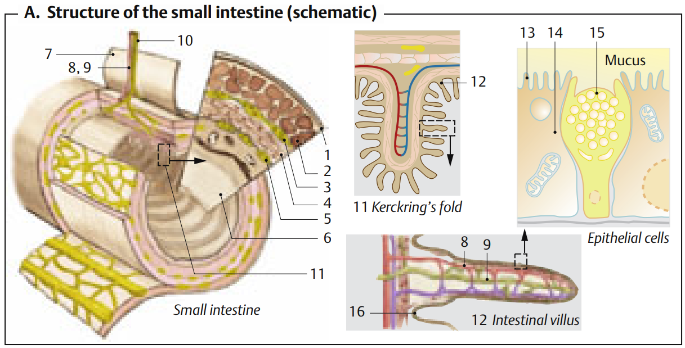
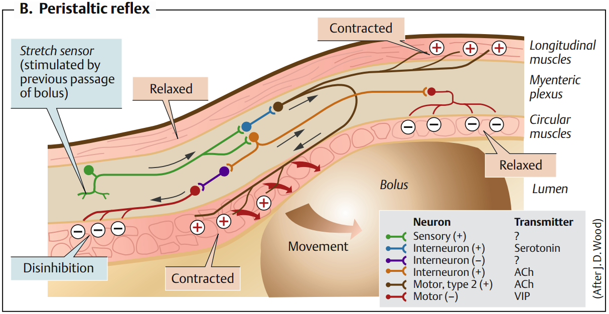
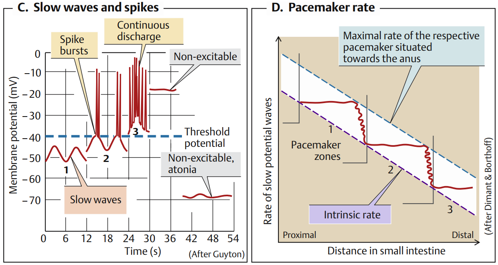
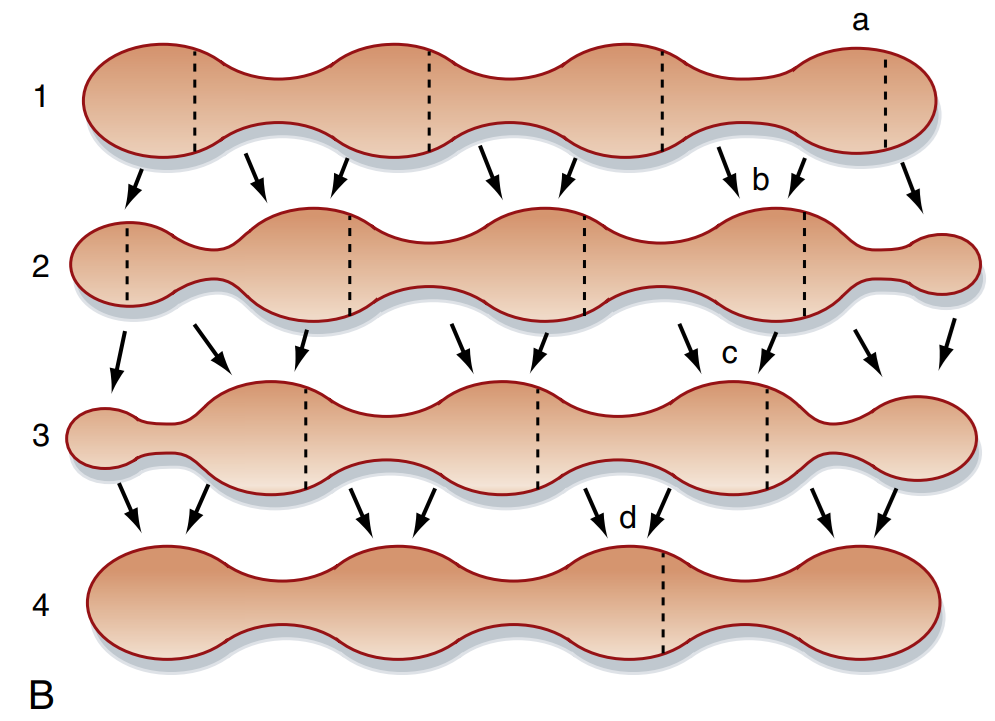
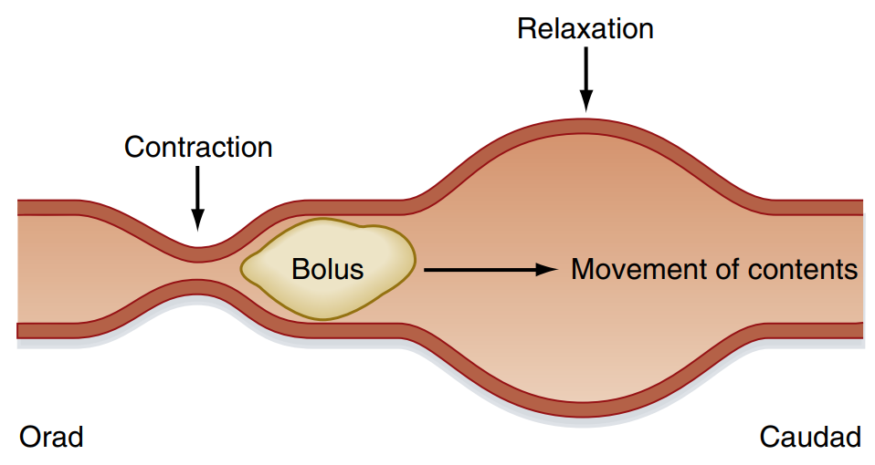
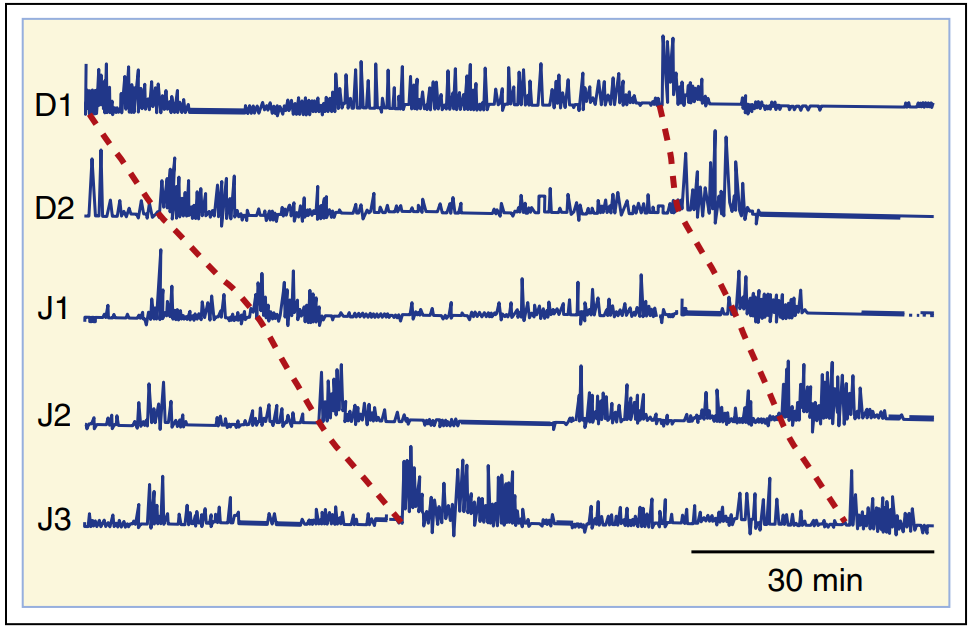
Phần II: Hoạt động Bài tiết Dịch tiêu hóa
Quá trình tiêu hóa hóa học tại ruột non không thể tự thực hiện độc lập mà cần sự hỗ trợ đắc lực từ dịch bài tiết của các cơ quan phụ trợ lân cận đổ vào tá tràng (dịch tụy, dịch mật) và dịch bài tiết từ các tuyến niêm mạc ruột (dịch ruột).
1. So sánh các dịch bài tiết hoạt động tại ruột non
| Đặc tính so sánh | Dịch Tụy ngoại tiết | Dịch Mật (từ Gan & Túi mật) | Dịch Ruột (từ Tuyến niêm mạc) |
|---|---|---|---|
| Thể tích bài tiết | 1.2 – 1.5 lít / ngày | 0.5 – 1.0 lít / ngày | 1.5 – 2.0 lít / ngày |
| Đặc tính lý hóa | Không màu, pH kiềm (7.8 – 8.0) | Màu vàng/xanh, pH kiềm nhẹ (7.0 – 7.6) | Dịch lỏng đục nhẹ, pH kiềm (7.5 – 8.0) |
| Thành phần chính |
- Ion HCO3- nồng độ cao. - Các men tiêu hóa carbohydrat (amylase), lipid (lipase, prophospholipase A2), protein (tiền men: trypsinogen, chymotrypsinogen, procarboxypeptidase). |
- Muối mật (Bile salts), sắc tố mật (bilirubin). - Cholesterol, lecithin (phospholipid) và các chất điện giải. |
- Chất nhầy từ tuyến Brunner. - Nước, điện giải từ tuyến Lieberkühn. - Các men gắn bờ bàn chải: peptidase, maltase, sucrase, lactase, enterokinase. |
| Vai trò sinh lý |
- Trung hòa acid dịch vị từ dạ dày. - Cung cấp pH tối ưu cho hoạt động của các men. - Thực hiện phần lớn sự phân hủy carbohydrat, protein và lipid trong lòng ruột. |
- Nhũ tương hóa lipid (Emulsification) thành các hạt mỡ nhỏ. - Tạo hạt micelle hòa tan giúp hấp thu lipid và các vitamin tan trong dầu. - Đào thải sắc tố mật và chất độc. |
- Chất nhầy bảo vệ niêm mạc tá tràng. - Dung môi hòa tan chyme. - Enterokinase hoạt hóa trypsinogen thành trypsin. - Thực hiện bước tiêu hóa cuối cùng ngay tại bề mặt hấp thu. |
| Cơ chế điều hòa |
- Thần kinh: Phế vị (Acetylcholine). - Nội tiết: Secretin (tăng tiết nước & HCO3-); Cholecystokinin (CCK) (tăng tiết enzyme). |
- Co bóp túi mật & giãn cơ Oddi: chủ yếu do CCK và phản xạ phế
vị. - Tăng sản xuất mật ở gan: do Secretin kích thích tế bào biểu mô đường mật bài tiết HCO3-. |
- Kích thích cơ học và hóa học tại chỗ của dưỡng trấp lên niêm mạc. - Phản xạ thần kinh ruột địa phương. - Hormone VIP và secretin kích thích tuyến Brunner. |
2. Các cơ chế bài tiết quan trọng
Cơ chế bài tiết HCO3- của tế bào ống tuyến tụy
Tế bào ống tuyến tụy bài tiết dịch giàu HCO3- để trung hòa acid từ dạ dày đi xuống tá tràng. Quá trình này diễn ra qua các bước:
- CO2 khuếch tán từ máu vào tế bào ống tuyến, kết hợp với H2O dưới sự xúc tác của enzyme Carbonic Anhydrase (CA) tạo thành H2CO3, chất này nhanh chóng phân ly thành H+ và HCO3-.
- Tại màng đỉnh (tiếp xúc lòng ống dẫn), ion HCO3- được bài xuất chủ động vào lòng ống thông qua kênh trao đổi Cl-/HCO3- (kênh này hoạt động đồng hành với kênh Cl- CFTR).
- Tại màng đáy bên (tiếp xúc dịch kẽ/máu), ion H+ được đưa ra ngoài tế bào thông qua bơm trao đổi Na+/H+ hoặc bơm H+-ATPase, trung hòa lượng base kẽ. Na+ đi vào tế bào sẽ được bơm Na+/K+-ATPase đẩy ra ngoài. Nước đi vào lòng ống theo con đường khe tế bào (paracellular) dưới tác động của gradient thẩm thấu tạo bởi Na+ và HCO3-.
Cơ chế điều hòa bài tiết mật và Chu trình ruột - gan
Sự bài tiết mật được điều hòa bởi cả cơ chế thần kinh và nội tiết. Khi dưỡng trấp giàu chất béo và acid đi vào tá tràng, tế bào I của niêm mạc tá tràng bài tiết hormone Cholecystokinin (CCK) vào máu. CCK gắn thụ thể kích thích co bóp mạnh mẽ túi mật đồng thời làm giãn cơ vòng Oddi, cho phép mật đậm đặc đổ vào tá tràng. Cùng lúc đó, tế bào S tiết hormone Secretin kích thích biểu mô đường mật bài tiết dung dịch giàu nước và HCO3- để hỗ trợ trung hòa acid dịch vị.
Sau khi muối mật thực hiện chức năng nhũ tương hóa chất béo ở tá tràng và hỗng tràng, chúng không bị thải hết ra ngoài. Khoảng 94 - 95% muối mật được tái hấp thu tích cực tại đoạn cuối của hồi tràng qua kênh đồng vận chuyển Na+-muối mật (ASBT), đi vào tĩnh mạch cửa trở về gan để tái bài tiết. Đây gọi là Chu trình ruột - gan (Enterohepatic Circulation). Mỗi phân tử muối mật trung bình quay vòng khoảng 17 lần trước khi bị đào thải theo phân.
Cấu trúc hạt Micelle và sự hòa tan mỡ
Muối mật là các phân tử lưỡng cực (amphipathic): có một cực kỵ nước (hydrophobic - bản chất steroid) hướng vào trong và một cực ưa nước (hydrophilic - gốc peptid phân cực) hướng ra ngoài. Trong lòng ruột, muối mật và lecithin bao bọc các sản phẩm tiêu hóa lipid (acid béo tự do, monoglycerid, cholesterol) để hình thành cấu trúc siêu vi gọi là hạt Micelle (hạt mixen). Hạt micelle hòa tan được trong nước, vận chuyển chất béo xuyên qua lớp dịch nhầy không di động (unstirred water layer) để tiếp cận bờ bàn chải tế bào ruột.
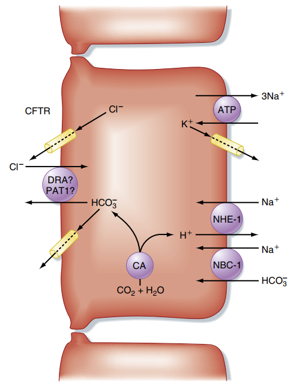
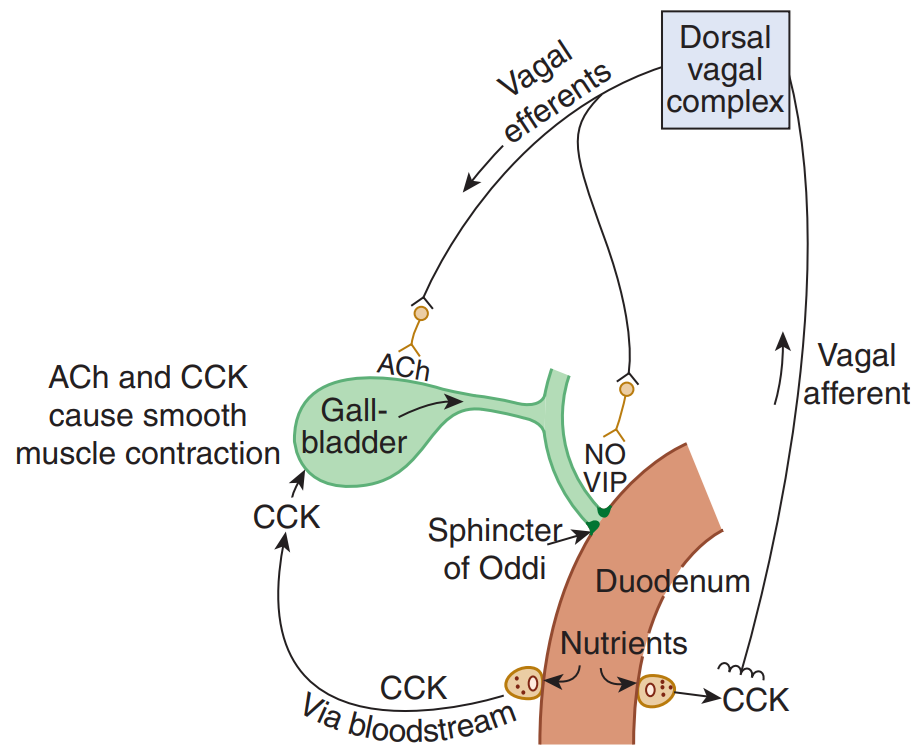
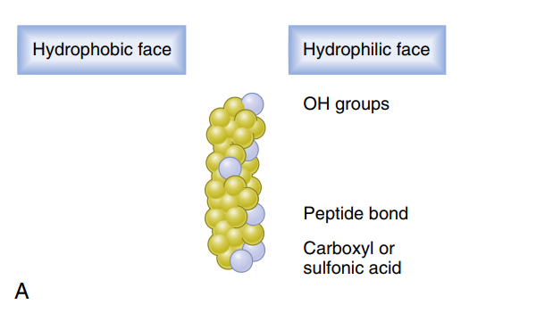
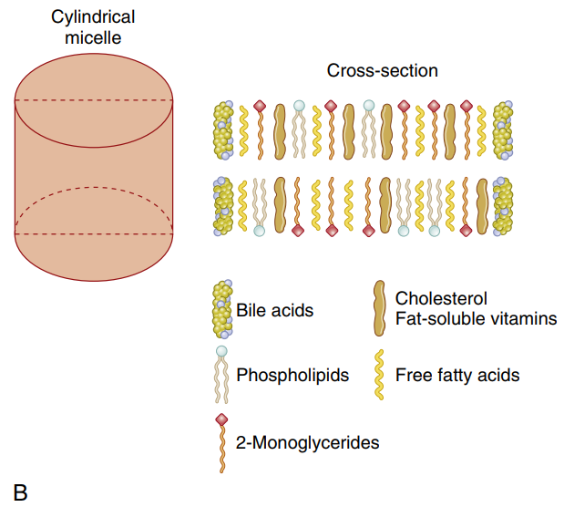
Phần III: Cơ chế Tiêu hóa và Hấp thu các chất dinh dưỡng
Hầu hết quá trình tiêu hóa hóa học các phân tử lớn được hoàn tất tại ruột non nhờ các enzyme của dịch tụy và enzyme gắn ở màng vi nhung mao (bờ bàn chải). Đây cũng là nơi hấp thu nước, điện giải và các đơn phân chất dinh dưỡng thiết yếu vào hệ tuần hoàn.
1. Tiêu hóa và hấp thu Carbohydrate (Glucid)
Tinh bột và các polysaccharide lớn được tiêu hóa sơ khởi trong lòng ruột nhờ men amylase tụy cắt thành các oligosaccharide, trisaccharide và đường đôi maltose. Quá trình tiêu hóa cuối cùng diễn ra tại bề mặt màng tế bào biểu mô nhờ các enzyme đặc hiệu gắn trên bờ bàn chải:
- Maltase: phân hủy maltose thành 2 phân tử glucose.
- Sucrase: phân hủy sucrose (đường mía) thành 1 glucose và 1 fructose.
- Lactase: phân hủy lactose (đường sữa) thành 1 glucose và 1 galactose.
Cơ chế hấp thu các phân tử đường đơn đi qua màng tế bào ruột (enterocyte) diễn ra phân biệt như sau:
- Glucose và Galactose: Hấp thu tích cực thứ phát từ lòng ruột vào tế bào qua kênh đồng vận chuyển SGLT1 (Sodium-Glucose Cotransporter 1) nằm ở màng đỉnh. Kênh này đồng vận chuyển 2 ion Na+ đi kèm với 1 phân tử đường đơn, lợi dụng gradient nồng độ Na+ nội bào thấp do bơm Na+/K+-ATPase ở màng đáy bên thiết lập liên tục.
- Fructose: Hấp thu bằng cơ chế khuếch tán thuận hóa qua kênh vận chuyển GLUT5 ở màng đỉnh. Quá trình này hoàn toàn thụ động và không phụ thuộc Na+.
- Vận chuyển ra màng đáy bên: Sau khi nồng độ các đường đơn (glucose, galactose, fructose) tích tụ cao trong bào tương, chúng cùng khuếch tán thuận hóa qua kênh GLUT2 ở màng đáy bên đi vào dịch kẽ rồi khuếch tán vào các mao mạch máu để theo tĩnh mạch cửa về gan.
2. Tiêu hóa và hấp thu Protein (Chất đạm)
Quá trình tiêu hóa protein bắt đầu ở dạ dày bằng men pepsin, nhưng phần lớn diễn ra tại ruột non nhờ hoạt động phối hợp của các men protease tụy:
- Endopeptidase (Trypsin, Chymotrypsin, Elastase): cắt liên kết peptide bên trong chuỗi polypeptide để tạo ra các đoạn oligopeptide ngắn.
- Exopeptidase (Carboxypeptidase A & B): cắt các acid amin đơn lẻ ở đầu carboxyl tận cùng của chuỗi peptide.
Ở màng bờ bàn chải, men aminopeptidase tiếp tục phân hủy các oligopeptide thành acid amin tự do và các di/tripeptide ngắn. Cơ chế vận chuyển qua màng tế bào biểu mô ruột rất đặc trưng:
- Acid amin tự do: Đồng vận chuyển chủ động thứ phát cùng ion Na+ thông qua các kênh symport đặc hiệu ở màng đỉnh (tương tự cơ chế của glucose).
- Dipeptide và Tripeptide: Được hấp thu nguyên vẹn qua màng đỉnh bằng kênh đồng vận tích cực PepT1 (Peptide Transporter 1) đồng vận chuyển cùng ion H+. Khi đã vào bên trong tế bào ruột, các peptidase nội bào sẽ lập tức thủy phân hoàn toàn các di/tripeptide này thành các acid amin tự do.
- Vận chuyển ra màng đáy bên: Các acid amin tự do đi qua màng đáy bên bằng các chất vận chuyển khuếch tán thuận hóa (không phụ thuộc Na+) để vào máu tĩnh mạch cửa.
3. Tiêu hóa và hấp thu Lipid (Chất béo)
Lipid là chất kỵ nước, nên quá trình tiêu hóa và hấp thu phức tạp hơn nhiều so với carbohydrate và protein:
- Nhũ tương hóa: Dưới tác dụng nhào trộn cơ học của nhu động ruột và hoạt tính của muối mật/lecithin, các khối mỡ lớn được chia nhỏ thành các hạt nhũ tương hóa có kích thước cực nhỏ, làm tăng hàng triệu lần diện tích tiếp xúc cho men lipase hoạt động.
- Tiêu hóa hóa học: Enzyme Lipase tụy (với sự trợ giúp của Colipase) cắt liên kết ester của Triglyceride thành các acid béo tự do (FFA) và 2-monoglyceride.
- Hấp thu qua bờ bàn chải: FFA và monoglycerid được bao bọc trong các hạt micelle muối mật. Khi hạt micelle tiếp cận sát bờ bàn chải tế bào biểu mô, do màng tế bào có bản chất là lớp kép lipid, các acid béo tự do và monoglycerid sẽ giải phóng khỏi micelle và khuếch tán thụ động trực tiếp qua màng đỉnh vào trong bào tương.
- Tái tổng hợp và Tạo Chylomicron: Đi vào lưới nội bào trơn (smooth ER), các acid béo và monoglycerid được ester hóa ngược lại tạo thành Triglyceride. Các triglyceride này được kết hợp với phospholipid, cholesterol và bọc ngoài bằng lớp protein chuyên biệt (apolipoprotein B-48) tại bộ máy Golgi tạo nên các hạt lipoprotein lớn gọi là Chylomicron.
- Xuất bào và Vận chuyển: Các hạt chylomicron được xuất bào qua màng đáy bên. Do kích thước hạt chylomicron quá lớn (khoảng 100 - 500 nm), chúng không thể chui qua các lỗ rào của mao mạch máu bình thường. Thay vào đó, chúng đi vào các khe mở lớn của ống bạch huyết trung tâm (lacteal) trong lòng nhung mao, theo hệ bạch huyết đổ về ống ngực rồi mới đi vào tuần hoàn máu chung.
4. Hấp thu Nước và Điện giải
Mỗi ngày ống tiêu hóa nhận khoảng 9 lít dịch (khoảng 2 lít từ ăn uống, 7 lít từ dịch tiết nước bọt, dạ dày, mật, tụy, ruột). Ruột non hấp thu khoảng 7 - 8 lít nước, phần còn lại đi xuống đại tràng.
- Cơ chế hấp thu nước: Nước được hấp thu hoàn toàn thụ động thông qua hai con đường: xuyên màng tế bào (transcellular qua kênh aquaporin) và đi qua khe giữa hai tế bào kế cận (paracellular qua tight junctions lỏng lẻo ở ruột non). Động lực đẩy dòng nước đi là gradient thẩm thấu được tạo ra do quá trình vận chuyển tích cực liên tục của ion Na+ và các chất dinh dưỡng (đường đơn, acid amin) từ lòng ruột vào dịch kẽ bên dưới tế bào biểu mô.
- Hấp thu Natri (Na+): Na+ đi vào tế bào màng đỉnh qua các kênh đồng vận SGLT1, PepT1 hoặc kênh trao đổi Na+/H+ (NHE3). Sau đó Na+ được bơm Na+/K+-ATPase ở màng đáy bên chủ động đẩy ra dịch kẽ, kéo theo Cl- để giữ cân bằng điện tích và kéo nước theo thẩm thấu.
5. Hấp thu Vitamin và Khoáng chất
- Vitamin tan trong dầu (A, D, E, K) Được hòa tan trực tiếp vào lõi kỵ nước của các hạt micelle muối mật, hấp thu thụ động qua màng tế bào biểu mô cùng lipid và được đóng gói vào hạt chylomicron.
- Vitamin tan trong nước (nhóm B, C) Hầu hết được hấp thu chủ động hoặc khuếch tán thuận hóa phụ thuộc Na+ tại hỗng tràng.
- Vitamin B12 (Cobalamin) Bắt buộc phải gắn với Yếu tố nội tại (Intrinsic Factor - IF) do tế bào viền dạ dày tiết ra. Phức hợp B12-IF đi xuống đoạn cuối hồi tràng và được hấp thu chủ động thông qua thụ thể đặc hiệu (cubilin).
- Sắt (Fe2+) Hấp thu chủ yếu ở tá tràng và phần đầu hỗng tràng. Sắt hóa trị 3 (Fe3+) phải được khử thành Fe2+ nhờ enzyme reductase màng trước khi đi qua kênh DMT1 vào tế bào. Tại nội bào, sắt gắn vào ferritin để dự trữ hoặc đi qua màng đáy bên qua kênh ferroportin, oxy hóa lại thành Fe3+ để gắn vào protein vận chuyển transferrin trong máu.
- Canxi (Ca2+) Hấp thu chủ động tích cực tại tá tràng nhờ sự kích hoạt của Vitamin D hoạt tính (Calcitriol). Calcitriol kích thích tăng tổng hợp kênh Ca2+ màng đỉnh (TRPV6), tăng protein mang nội bào Calbindin (giúp vận chuyển Ca2+ qua bào tương mà không làm tăng Ca2+ tự do gây độc tế bào) và tăng hoạt động của bơm Ca2+-ATPase ở màng đáy bên để đẩy Ca2+ vào máu.
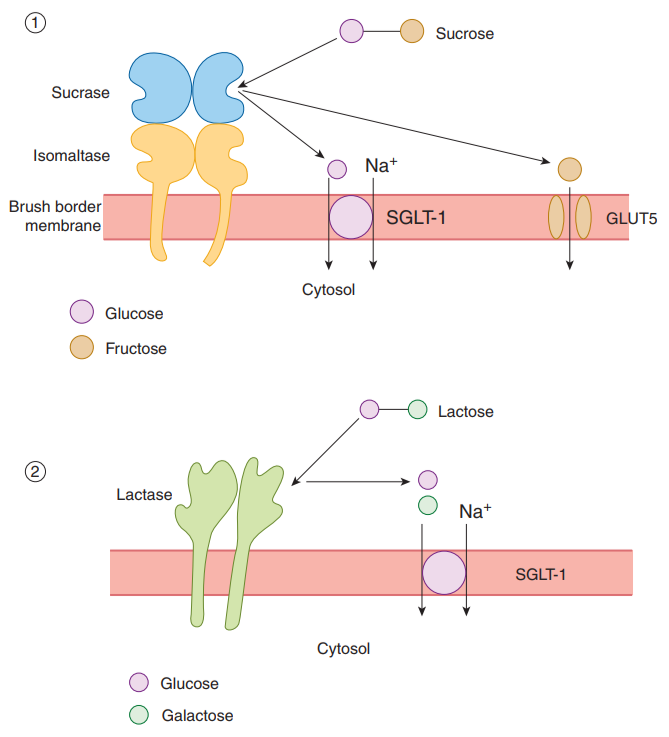
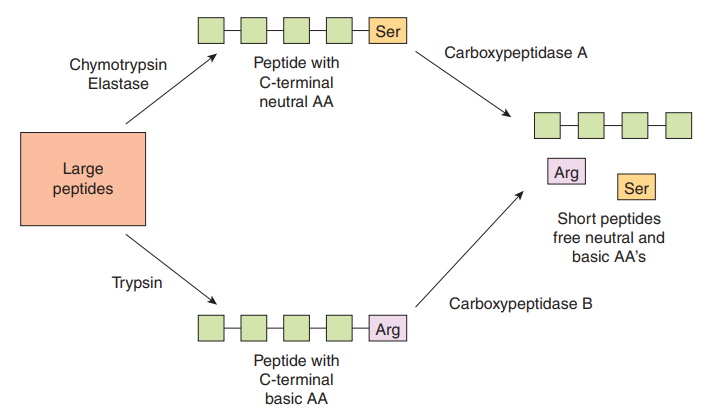
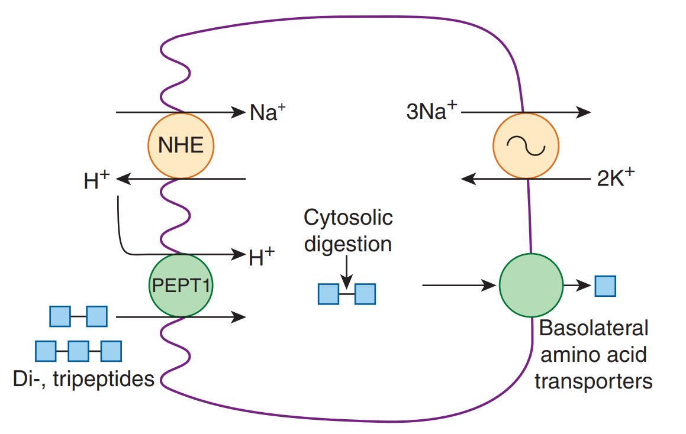
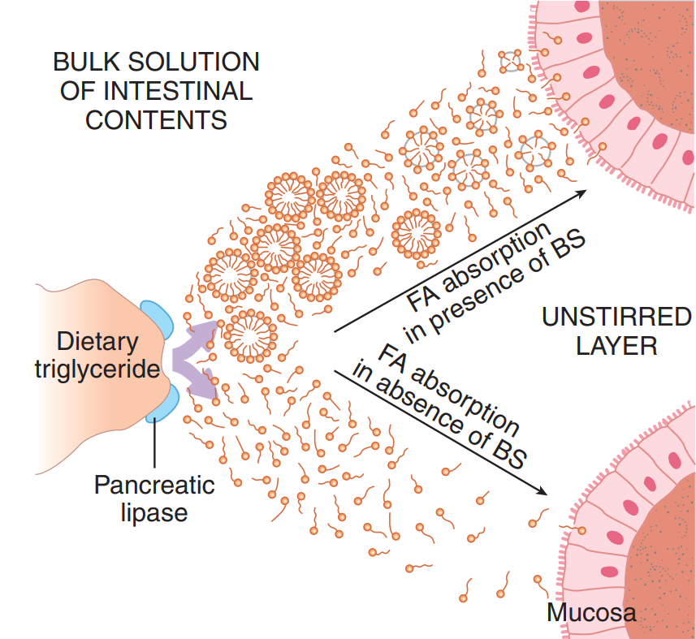
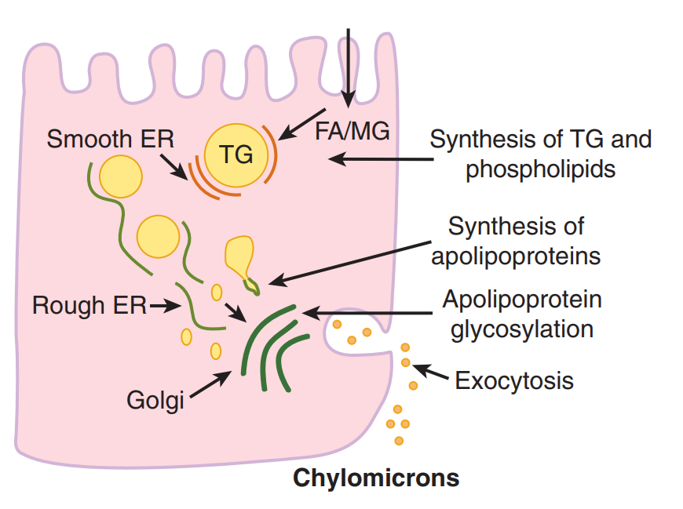
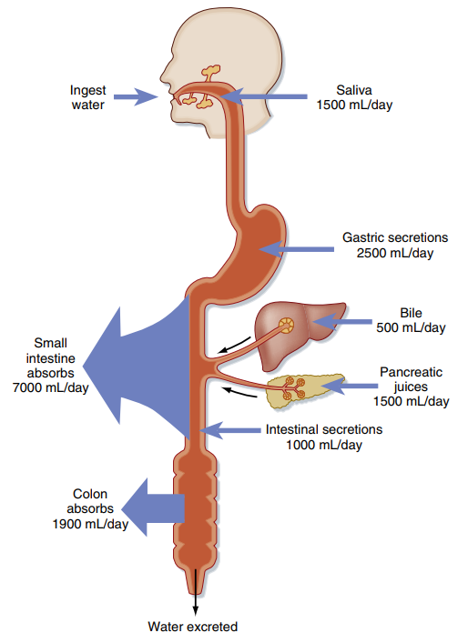
Phần IV: Mối liên hệ Lâm sàng & Ứng dụng Y khoa
Hiểu biết sâu sắc về sinh lý hấp thu tại ruột non là cơ sở nền tảng giúp lý giải các bệnh cảnh lâm sàng phổ biến liên quan đến hội chứng kém hấp thu và suy dinh dưỡng:
🩺 1. Hội chứng Không dung nạp đường Lactose (Lactose Intolerance)
Xảy ra do sự thiếu hụt men lactase ở màng vi nhung mao bờ bàn chải của tế bào biểu mô ruột (thường mang tính chất di truyền bẩm sinh hoặc suy giảm tự nhiên theo tuổi tác, hoặc sau các tổn thương niêm mạc ruột do viêm nhiễm).
Khi không có men lactase, đường lactose trong sữa không thể bị thủy phân thành glucose và galactose. Lactose không hấp thu được ở lại lòng ruột non, làm tăng áp suất thẩm thấu kéo nước từ dịch kẽ vào lòng ruột gây tiêu chảy thẩm thấu. Khi đi xuống ruột già, lactose bị vi khuẩn lên men tạo ra nhiều khí CO2, H2 và các acid béo chuỗi ngắn, gây chướng bụng, đầy hơi, co thắt đau quặn bụng và đi ngoài phân chua.
🩺 2. Bệnh Celiac (Celiac Disease & Teo Nhung Mao Ruột)
Bệnh Celiac là một bệnh lý tự miễn hệ thống kích hoạt bởi gluten (một loại protein có trong lúa mì, lúa mạch). Ở những người có cơ địa nhạy cảm di truyền, sự phơi nhiễm với gluten gây ra phản ứng viêm mạn tính qua trung gian tế bào T tại niêm mạc ruột non.
Hậu quả là gây phá hủy các tế bào biểu mô ruột, dẫn đến hiện tượng teo hoàn toàn các nhung mao (villous atrophy) và phì đại các tuyến Lieberkühn. Bề mặt bờ bàn chải bị san phẳng hoàn toàn, làm giảm nghiêm trọng diện tích hấp thu hiệu dụng của ruột non, dẫn đến kém hấp thu toàn diện các chất dinh dưỡng (lipid, protein, đường, sắt, calci, vitamin), gây thiếu máu thiếu sắt, loãng xương, suy kiệt và tiêu chảy phân mỡ.
🩺 Ứng dụng Y khoa Cao lâm sàng (High-Yield Clinical Correlation)
- Hội chứng Ruột ngắn (Short Bowel Syndrome - SBS): Xảy ra sau khi phẫu thuật cắt bỏ một phần lớn ruột non (do tắc mạch mạc treo gây hoại tử ruột, chấn thương, hoặc bệnh Crohn nặng). Khi chiều dài ruột non còn lại ít hơn 200 cm, diện tích hấp thu giảm nghiêm trọng gây tiêu chảy mất nước kéo dài, sụt cân và suy kiệt. Điều trị đòi hỏi nuôi dưỡng tĩnh mạch hoàn toàn (TPN) trong giai đoạn đầu và kích hoạt sự thích nghi dần của phần ruột non còn lại bằng các hormone tăng trưởng tế bào biểu mô ruột (như teduglutide - chất tương đồng GLP-2).
- Tổn thương Hồi tràng trong Bệnh Crohn & Kém hấp thu Muối mật: Bệnh Crohn thường có xu hướng tổn thương chọn lọc ở đoạn cuối hồi tràng. Khi hồi tràng bị viêm loét xơ hóa, quá trình tái hấp thu chủ động muối mật qua kênh ASBT bị đình trệ. Lượng muối mật bị thất thoát lớn qua phân khiến gan không tổng hợp bù kịp, dẫn đến cạn kiệt bể muối mật nội sinh. Hậu quả là làm mất khả năng tạo hạt micelle, dẫn đến kém hấp thu nặng chất béo và các vitamin tan trong dầu (A, D, E, K). Đồng thời, lượng muối mật lớn đi xuống đại tràng sẽ kích thích niêm mạc đại tràng bài tiết nước gây tiêu chảy muối mật. Ngoài ra, bệnh nhân cũng bị thiếu hụt Vitamin B12 do hồi tràng là nơi duy nhất hấp thu phức hợp B12-IF.
Tài liệu tham khảo (AMA Citation style)
- Mai PT. Sinh lý học y khoa. Nhà xuất bản Đại học Quốc gia Thành phố Hồ Chí Minh; 2024.
- Koeppen BM, Stanton BA. Berne and Levy Physiology. 8th ed. Elsevier; 2024.
- Silbernagl S, Despopoulos A. Color Atlas of Physiology. 6th ed. Thieme; 2009.
- Barrett KE, Barman SM, Boitano S, Brooks HL. Ganong's Review of Medical Physiology. 24th ed. McGraw-Hill Medical; 2012.
- Đặng HAT. Sinh lý TIÊU HOÁ YDS 2025. [Video recording]. Bs. Linh O'la Scar; 2025.